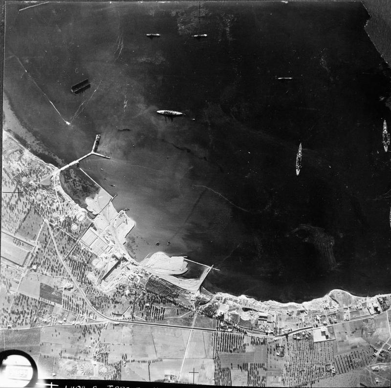
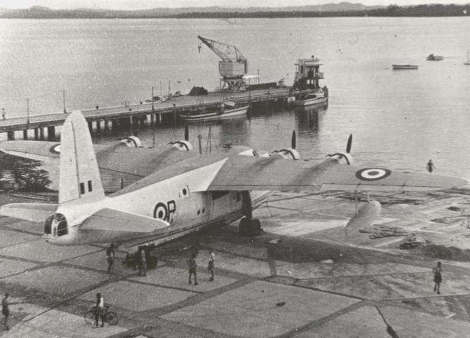
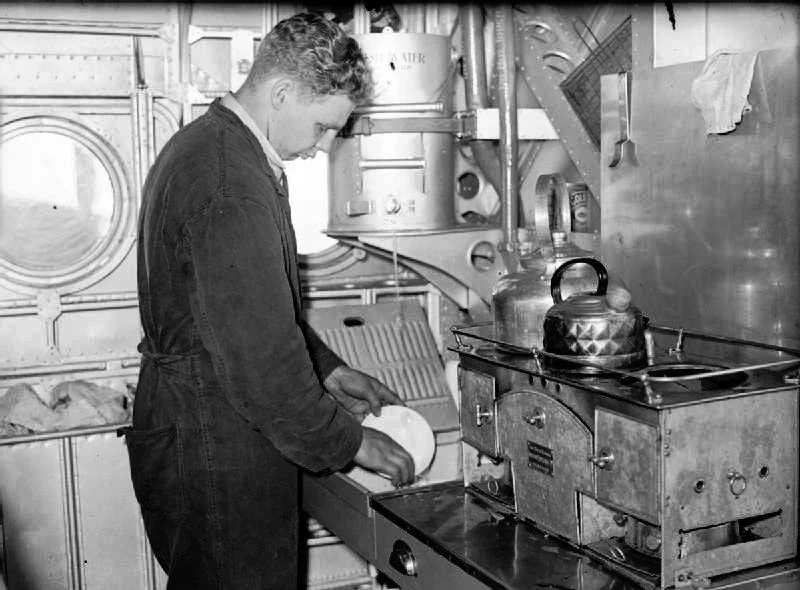
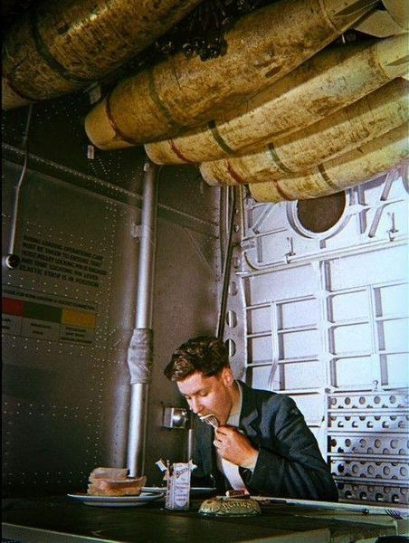
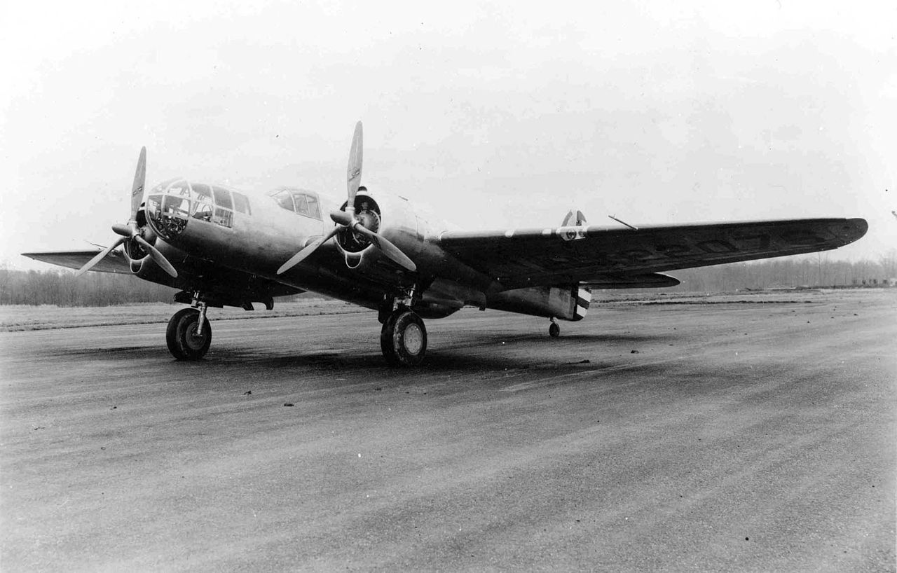
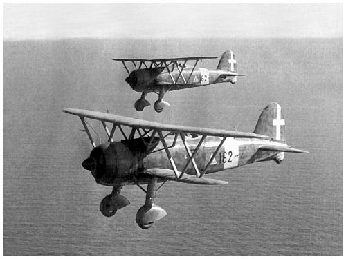
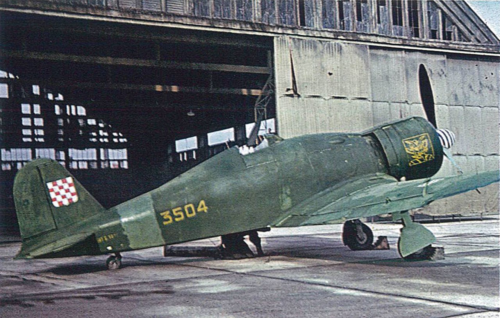
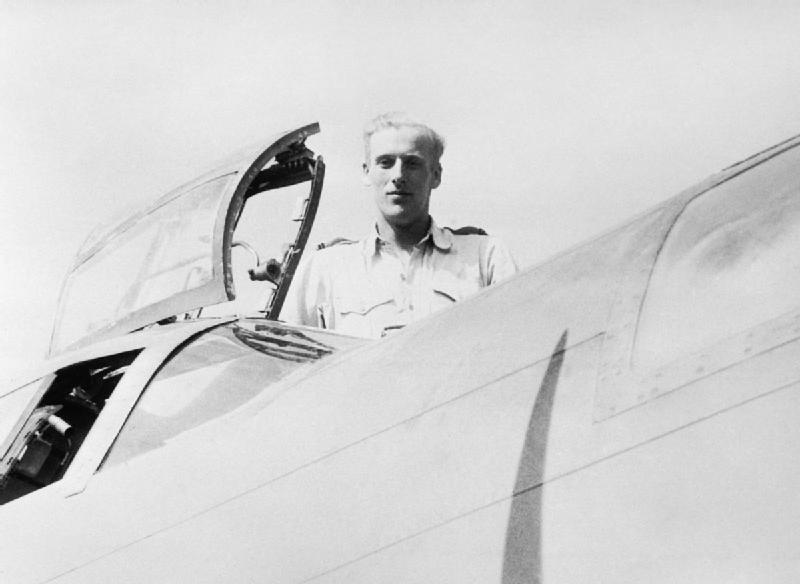

WW2 중 항모에서의 야간 작전 (11) - 정찰 없이는 공격도 없다
게시: 2025-05-01T06:30:27+09:00
<007보다 더 좋은 것> 군사작전에서 가장 중요한 것은 정보. 그 어떤 화력도 방호력도 막대한 군수물자도 정보만한 가치를 가지지 못함. 타란토 습격 작전 같은 경우, 좌표와 수심, 지형 등의 정보는 수만년 전부터, 그리고 부두 시설 등은 수백년 전부터 고정되어 있는 항구이니 정보가 그렇게까지 중요하지는 않을 것 같지만 절대 그렇지 않음. 가장 중요한 정보는 타란토에 과연 어떤 군함들이 얼마나, 그리고 구체적으로 어느 위치에 정박하고 있는지 하는 부분. 그리고 그에 못지 않게 중요한 것이 대공포와 탐조등, 그리고 어뢰 방어망 등의 방어시설이 어떻게 설치되어 있느냐 하는 것. 특히 군함이란 부동산이 아니라 동산이므로, 공습 바로 직전의 정보가 절실하게 필요. 그런 정보를 알아내는 것에는 간첩 등등의 다양한 수단이 동원되지만 가장 신뢰할 수 있는 것은 항공 정찰 사진. 모든 간첩이 007도 아니지만, 007 본인이 직접 눈으로 본다고 해도 해군의 모든 기술적인 부분에 대해서 전문적인 지식을 가진 것은 아니므로, 항공 사진을 보고 전문가들이 판단하고 분석하는 것이 좋기 때문.

(결국 정찰기로 찍어온 타란토 항구의 사진. 전함들이 타란토의 2개 항구 중 Mar Grande 항의 계류장에 계류된 것이 보임.) 문제는 항공 사진을 찍으려면 영국 정찰기가 타란토 상공을 비행해야 하는데, 거기엔 2가지 문제가 존재. 우선 영국 정찰기가 상공에 떴다는 것은 곧 거기에 영국의 폭격이 있을 가능성이 높다는 경고가 된다는 점. 그리고 두 번째로, 이탈리아 공군 전투기들이 영국 정찰기를 가만 두겠냐는 것. 전시였으니 주요 군항인 타란토 일대를 주기적으로 초계 비행하는 이탈리아 공군 전투기들도 있었지만, 운 좋게 초계 비행이 없는 때를 틈타 타란토 상공에 진입한다고 해도 지상의 이탈리아군이 정찰기의 출현을 탐지하고 인근 공군기지로부터 전투기를 호출하는 것에 어떻게 대응할 것인가 하는 문제가 있었음. 당시 소드피쉬를 날려보낼 항모 HMS Illustrious에 설치된 Type 79Z 레이더는 당시 이탈리아의 정찰기들을 60~70km 정도의 원거리에서 활발히 잡아내고 있었으므로 일러스트리어스 상공에서 CAP을 치고 있던 함재 전투기들이 여유있게 날아가 이탈리아 정찰기들을 격추시키거나 쫓아내곤 했음. 그런데 이탈리아군에게는 레이더 기술이 전혀 없었으므로 지상군이 상공에 뜬 정찰기를 눈으로 보고 전투를 호출하면 너무 늦을 것이니, 괜찮지 않을까?

(Type 79 레이더는 초기 해군 버전의 레이더로서, 영국공군의 Chain Home 레이더처럼 송신 안테나와 수신 안테나가 저렇게 분리된 형태의 레이더. 43MHz의 주파수를 썼으며, 최대 74km 밖의 항공기를 탐지 가능. 초기 레이더답게 무척 허접하지만, 저걸 달기 위해서 HMS Illustrious는 그 긴박한 전쟁 와중에도 3개월이나 취역을 미뤘음. 저 송수신 안테나들을 달기 위해 아일랜드 뒤쪽에 새로 마스트를 세워야 했기 때문.) 그런데 이탈리아군에게 레이더가 없지 두뇌가 없는 것은 아니었음. 타란토 항구 근처에는 총 13개소의 청음소(sound-detection post)가 있었고, 이것들이 최대 46km 밖에서 비행하는 항공기의 엔진 소리를 듣고 조기 경보를 날릴 수 있었음. 근처에 아군 항공기가 없다면 적기가 분명하므로 일단 타란토 항구로 전투기가 출동하고 지상에서도 대공포와 탐조등에 공습 경보를 발령하는 방식. 물론 '근처 40여 km 밖 어딘가에 적기가 날고 있다'라는 것과 '적기가 방위각 137도, 거리 52km에서 시속 280km의 속도로 똑바로 타란토를 향해 날아오고 있다'라는 것은 전술적으로 엄청난 차이의 정보. 그래도 위협적인 것은 마찬가지. 그래서 정찰기는 빠르고 높이 날아야 했음. 그래야 전투기들의 추격으로터 도망칠 수 있는 확률이 높아짐. 그런데... 당시 지중해에 배치된 영국군 정찰기는 Short Sunderland 비행정. 선덜랜드는 비행정이 아니라 비행함이라고 불러야 하는 것 아닌가 싶을 정도로 커다란 4발 항공기로서, 원래 부유층의 편안한 해외 여행을 위해 개발된 S.23 Empire flying boat를 개조해서 만든 해양 초계기. 그러다보니 로열에어포스의 의도와는 달리 화장실은 물론 주방 시설은 물론, 별도의 식당까지 딸려 있었음. 다 좋은데, 이 비행정은 정찰기라기 보다는 해양 초계기로서 장시간 느릿느릿 대양을 순찰하며 적 잠수함을 찾는데 적합한 것이지 적 전투기가 순찰을 도는 타란토에 잽싸게 들어가서 사진을 찍고 바람처럼 빠져나오기엔 무리. 최고 속력도 340km/h에 불과하고 무엇보다 최대 상승고도도 5.2km에 불과. 이런 선덜랜드를 타란토에 투입하고 살아서 돌아오기를 기대하는 것은 무리. 그럼에도 불구하고 말타의 공군기지에서 약 750km 떨어진 타란토까지 다녀올 수 있는 항공기는 선덜랜드 뿐.

(Short Sunderland 비행정의 크기를 보여주는 사진)

(Short Sunderland 내부의 주방 모습)

(Short Sunderland 내부의 식당칸 모습. 머리 위의 물건은 폭탄 맞음. 평소엔 공기 저항을 줄이고자 저렇게 폭탄 rack을 기체 안쪽으로 당겨놓은 상태로 비행하다가, 적함을 발견하면 폭탄 rack을 밀어서 기체 밖 날개 밑으로 내보냄.) <역시 미제가 최고!> 이 외통수 상황을 영국 지중해 함대 사령관 커닝햄은 어떻게 해결했을까? 간단. 그냥 신형 고속 정찰기를 말타로 보내달라고 본국에 요청했음. 거기에 호응하여 온 것이 미국에서 1940년 막 도입한 Martin Maryland 3대. 쌍발 경폭격기로 개발된 매릴랜드는 최고 속력 489 km/h, 최대 상승고도 거의 9km로서 정찰 임무에 딱 좋은 기체. 당시 이탈리아 공군의 주력 전투기는 복엽기인 Fiat CR.42 Falco였는데, 최고 속력 441 km/h에 불과했고, 최신 단엽기인 Fiat G.50 Freccia도 최고 속력은 470 km/h에 불과하여 꽤 자신감 있게 타란토 정찰이 가능.

(Martin Maryland는 이름에서 알 수 있듯이 미국의 마틴사가 개발한 것인데 정작 미군은 사용하지 않음. 이유는 Douglas사에서 제작한 A-20 Havoc이 더 뛰어나 그걸 채택했기 때문. 그러나 당장 독일과 전쟁이 벌어진 영국과 프랑스가 묻지도 따지지도 않고 무조건 사겠다고 하여 총 450대가 제작되어 대서양을 건넘.)

(당시 타란토 일대에 배치된 이탈리아 공군의 주력 전투기인 Fiat CR.42 Falco (송골매). 소드피쉬처럼 이 기종도 1939년 도입된 최신예기로서, 복엽기 특성상 속력이 빠르지는 않았으나 매우 우수한 성능을 보여줌. 프랑스 항복 이후 이탈리아 공군은 이 기종을 들고 Battle of Britain에도 참전했는데, 거기서 영국 공군의 Hurricane은 물론 Spitfire 전투기와 맞붙어도 독파이팅에 있어서 절대 꿇리지 않았다고. 아무래도 느리다보니 뒤에서 내리꽂으며 기습해오는 것에는 약했지만, 당시 CR.42의 이탈리아 조종사들은 영국 전투기들의 기총 화력이 충분치 않아서 일부 피격되어도 CR.42는 별 피해를 입지 않았으며, 조종사 중 하나는 등에 총알을 맞았으나 등에 매고 있던 낙하산에 막혀 부상을 입지 않았다고 증언.)

(이탈리아가 기술력이 떨어져서 단엽기를 못 만들었던 것은 아님. 이건 Fiat G.50 Freccia (화살)인데, 놀랍게도 복엽기인 CR.42보다 1년 먼저 배치된 구형 기종이고, 제작 대수도 CR.42의 절반 수준에 불과.) 결국 이 매릴랜드 폭격기들을 고속 정찰기로 이용하여 타란토 항구를 여러 차례 촬영. 대부분은 고공에서 촬영했지만 실제 공습이 벌어지던 11월 11일 아침에는 낮은 구름이 잔뜩 낀 관계로 촬영이 불가능. 그러나 미친 정찰기 조종사였던 Adrian "Warby" Warburton가 '불가능이란 없다'라며 초저공으로 항구로 돌입하여 2바퀴나 선회하며 눈과 종이, 연필로 몇 척의 전함이 계류되어 있는지 확인. 이 정찰은 완벽한 성공을 거두어 이탈리아군은 전투기를 부르기는 커녕 대공포 사격조차 하기 전에 무사히 빠져나옴. 그런데 빠져 나와서 조종사, 옵저버와 기총수 총 3명이 서로 보고 적은 것을 비교해보니 일부는 전함이 5척, 일부는 6척이 있는 것으로 파악. 어지간하면 5~6척이라고 보고해도 될 것 같은데 미친 조종사 워비는 '이런 중요한 것을 대충 보고할 수는 없음'이라면서 기수를 돌려 다시 항구로 초저공으로 뛰어듬. 당연히 이번에는 대기하고 있던 이탈리아군 대공포가 맹렬히 불을 뿜었는데, 그 빽빽한 탄막 속에서도 전함은 5척, 순양함은 14척, 구축함은 27척이라고 확인한 뒤 말타로 돌아옴.

(정말 미친 조종사였던 Adrian "Warby" Warburton. 호주인인 그는 원래 조종사가 아니라 항법사로 매릴랜드에 올라탔는데, 인원 부족으로 인해 바로 몇 달 전에 조종 훈련을 받고 조종사가 된 사람. 그럼에도 불구하고 저 경폭격기로 여러 차례 정찰에 나서서 훌륭하게 임무를 완수했을 뿐만 아니라, 도중에 만난 이탈리아 공군 비행정은 물론 Fiat CR.42 Falco과도 공중전을 벌여 짧은 기간 총 5대의 비행정 및 전투기를 격추. 다만 늙은 조종사도 있고 용감한 조종사도 있지만 늙고 용감한 조종사는 없다는 말은 워비에게도 적용됨. 1944년 그는 P-38 전투기의 정찰기 버전을 타고 독일 뮌헨 근처에서 정찰 임무를 수행하다 행방불명되었는데, 그의 시신은 박살이 난 그의 기체와 함께 약 50년 후에야 발견되었다고.) 그런데 그런 식으로 한 번도 아니고 여러 번, 게다가 바로 그 날 밤에 공습할 거면서 당일날 아침에 저런 식으로 꺵판을 쳐놓으면 이탈리아군이 공습을 눈치채고 잔뜩 대기할 것이니, 저러면 안 되는 거 아닌가? 진짜 문제는 그런 것이 아니었음. 이미 여러 번 촬영한 사진을 분석한 결과, 타란토 항구 공습에는 생각보다 더 골치 아픈 것들이 많았음.